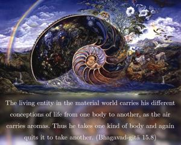
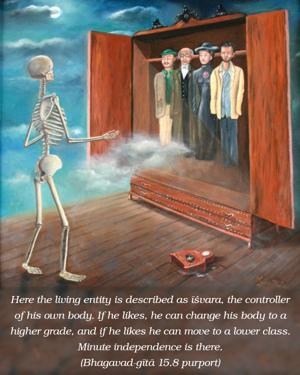
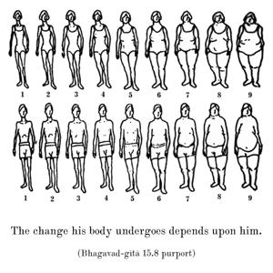
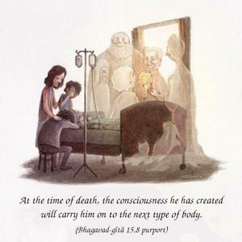

The living entity in the material world carries his different conceptions of life from one body to another, as the air carries aromas. Thus he takes one kind of body and again quits it to take another.




Here the living entity is described as īśvara, the controller of his own body. If he likes, he can change his body to a higher grade, and if he likes he can move to a lower class. Minute independence is there. The change his body undergoes depends upon him. At the time of death, the consciousness he has created will carry him on to the next type of body. If he has made his consciousness like that of a cat or dog, he is sure to change to a cat’s or dog’s body. And if he has fixed his consciousness on godly qualities, he will change into the form of a demigod. And if he is in Kṛṣṇa consciousness, he will be transferred to Kṛṣṇaloka in the spiritual world and will associate with Kṛṣṇa. It is a false claim that after the annihilation of this body everything is finished. The individual soul is transmigrating from one body to another, and his present body and present activities are the background of his next body. One gets a different body according to karma, and he has to quit this body in due course. It is stated here that the subtle body, which carries the conception of the next body, develops another body in the next life. This process of transmigrating from one body to another and struggling while in the body is called karṣati, or struggle for existence.